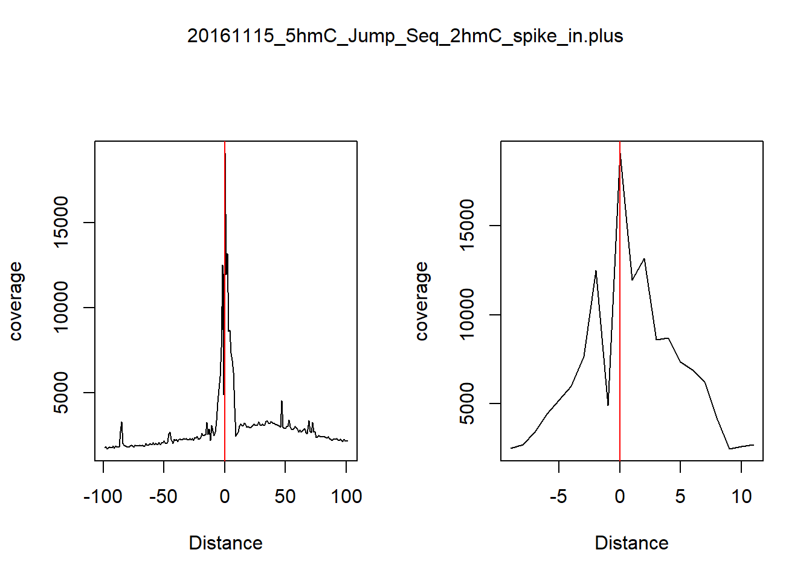
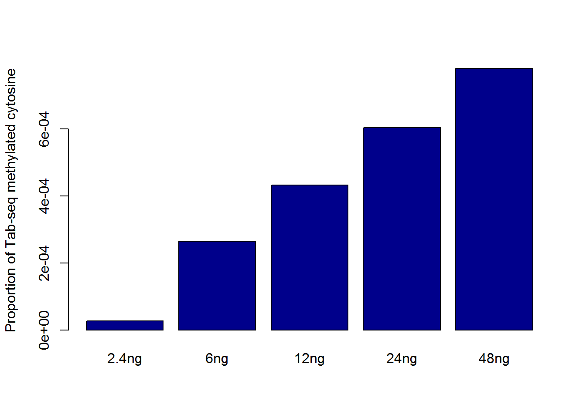
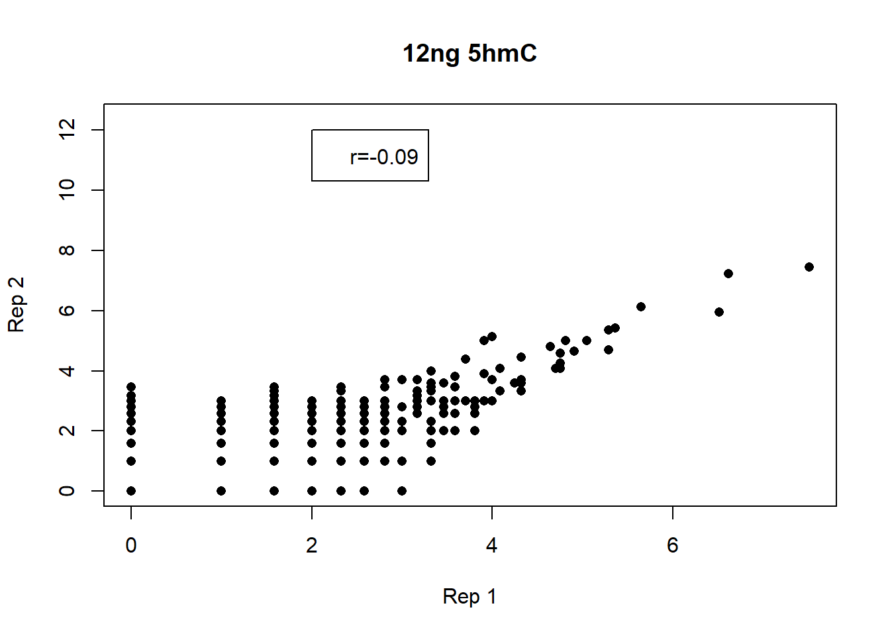
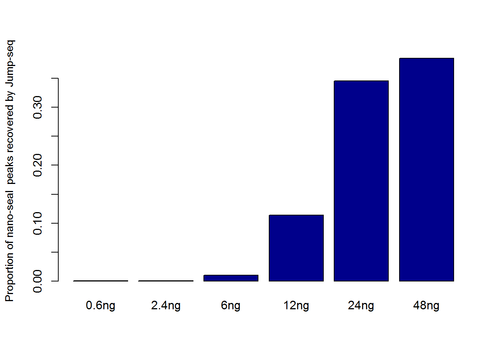
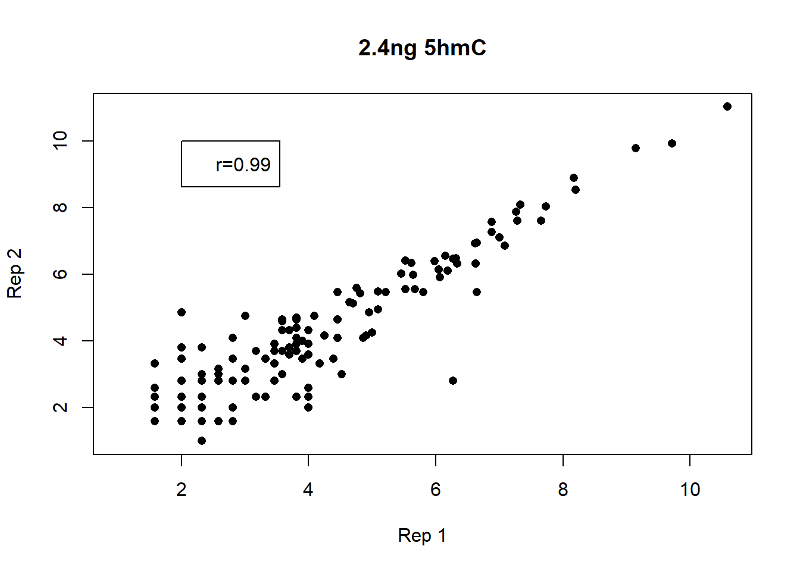
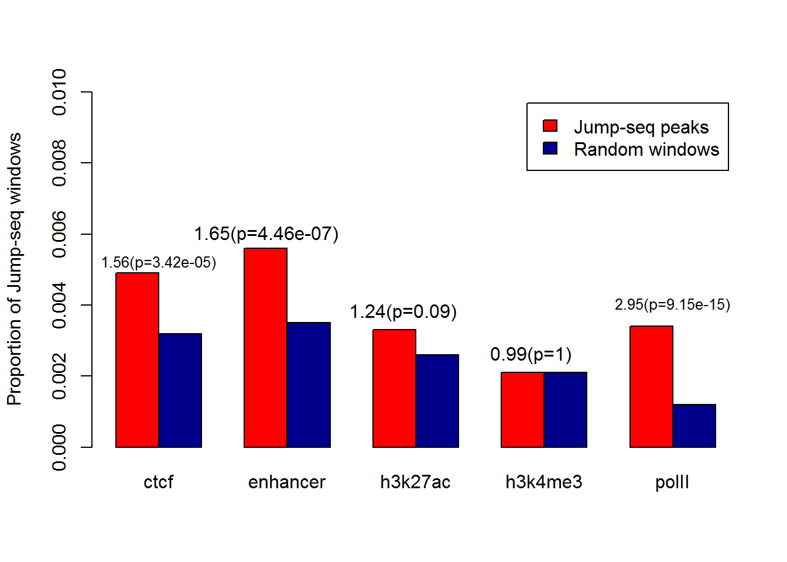
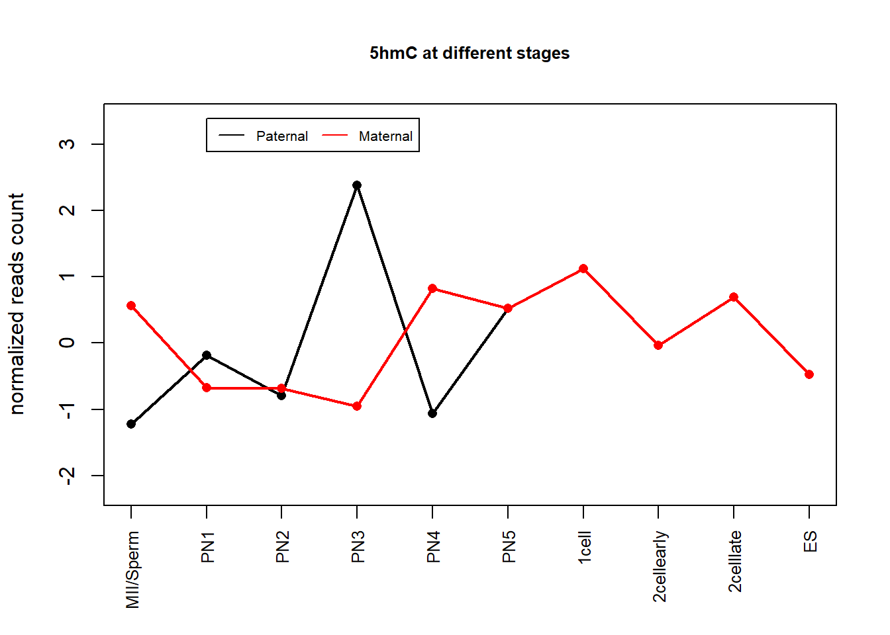
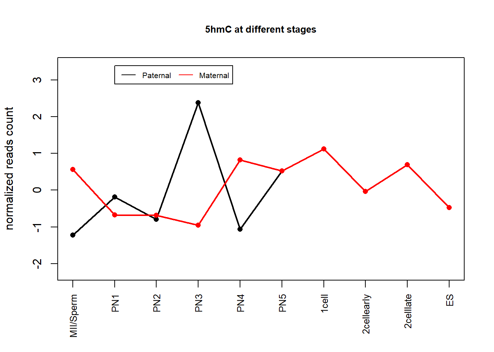

FinalAnalysis
Shengtong
July 25, 2018
Proof of concept
`
Accuracy of Jump-seq assessed with synthetic DNA
Fig 1.1, Number of reads (in million on y axis) at different sites, 5hmC (red) and unmodified C (blue), whose numbers are in brackets.
Quantification of 5hmC: linear correlation of read counts vs. 5hmC amount
Fig 1.2: The fitted regression line (red) on the fold change of number of reads (point) at different hmC proportions in spike in
Visualization
Figure: IGV view, show peaks at different DNA levels, also show peaks from Tab-seq or Nano-seal. See Figure 1B of Nano-seal paper.
Spatial distribution
The reference is GSM882244_FDR_0.0484. First got non-overlapping 5hmC regions and make sure each window has only one 5hmC site. For each window, count the reads depth at every site, then add up reads depth of these non-overlapping windows. Reads distribution is the accumulative reads depth at every base of all non-overlapping windows. Input Bam file is the replicate with largest number of reads.

Self-quantification
corrleation among replicates
Reads correlations in 1kb windows between two 5hmC replicates. log2 transformation in calculation of correlations of number of reads





Six samples of 12 samplers are combined as combined sample 1 and the rest six are combined sample 2. Reads in 20 bp windows are used to calculate correlations between these two combined samples. log2 transformation is used for reads on both x and y axis.
Venn diagram of two 0.6ng 5hmC replicates. For each replicate, 1kb windows are called at FDR 0.05. The proportion of peak windows between two replicates are presented inside the circle.
correlation between different DNA levels
Venn diagram of 0.6ng 5hmC and 48ng 5hmC. For each sample, 1kb windows are called at FDR 0.05. The proportion of peak windows between two replicates are presented inside the circle.
Comparison with other methods
correlation between Jump-seq and nano-seal
The correlation between combined 48ng 5hmC sample and 50ng nano-seal sample is 0.08. The calculation is problematic as jump-seq is using the actual number of reads while nano-seal uses average number across cells.
Comparison of Jump vs nano-seal with strong TAB-seq as gold standard

- JumpSeq: 1kb windows are called at FDR 0.05. To make a fair comparison, we trim the jump-seq peak windows to be of the same length as nano_seq peaks.
Enrichments
For jump-seq, we called 1kb windows at FDR0.05 as peaks and computed the proportion of peaks (in red) overlapping with Nano-seal peaks and Tab-seq peaks. Randomly pick same number of 1kb windows in the whole genome as jump-seq peaks at different DNA levels and calculate its proportion of windows (in blue) overlapping with Nano-seal peaks and Tab-seq peaks extended to 1kb.
- Jump-seq; 1kb window are called at FDR 0.05
Sensitvity
| 0.6ng | 2.4ng | 6ng | 12ng | 24ng | 48ng | |
|---|---|---|---|---|---|---|
| Jump_seq | 832 | 1116 | 19686 | 219644 | 649783 | 715179 |
| Nano_seal (50ng) | 465501 | 465501 | 465501 | 465501 | 465501 | 465501 |

To be fair, 1kb Jump-sea peaks are trimed to be of the same length as nano-seal peaks.
Overlap with other peaks by Venn diagram
If we combine eleven 48ng 5hmC samples together, there are 2367316 20bp windows with FDR 0.05, of which 686652 windows are overlapping with strong TAB-seq windows which are extended 10 bp downtream and 10 bp upstream. for strong TAB-seq, there are 2057636 20bp extended windows and 763937 are overlapping with Jump-seq windows.
Venn diagram of 5hmC and TAB-seq. 48ng samples are combined together and 20 bp windows are called at FDR 0.05. The proportion of peak windows of jump-seq overlapping with TAB-seq and the proportion of peaks of TAB-seq overlapping with jump-seq are presented inside the circle.
If we combine eleven 48ng 5hmC samples together, there are 2367316 20bp windows with FDR 0.05, of which 386331 (16.32%) windows are overlapping with hmC seal. For hmC seal, there are 64865 peaks and 58280 (89.85%) are overlapping with 5hmC peaks.
Venn diagram of 5hmC and hmC-seal. 48ng samples are combined together and 20 bp windows are called at FDR 0.05. The proportion of peak windows of jump-seq overlapping with hmC-seal and the proportion of peaks of hmC-seal overlapping with jump-seq are presented inside the circle.
If we use single 48gn 5hmC sample, then 28095/97548=28.80% 1kb windows are overllaping with nano-seal peaks and 24920/64865=38.42% nano-seal peaks overlapping with jump-seq.
BiS-seq (5mC)
Enrichment
Enrichment of methylated cytosine from Gary Hon at different genomic concentrations. Peak windows with p value less than 10^{-6} is used for 48ng, 24ng, 12ng, 6ng and FDR0.05 is used for 2.4ng. Number of peak windows are shown over the bar.
- cutoff used for peak windows: 2.4ng (FDR0.05), others use p values less than \(10^{-6}\).
Sensitivity
Normalized proportion of methylated cytosine from Gary Hon at different genomic concentrations recovered by Jump-seq. Peak windows with p value less than 10^{-6} is used for 48ng, 24ng, 12ng, 6ng and FDR0.05 is used for 2.4ng
Correlation between replicates
Correlation of reads in 20 bp windows between two replicates of 2.4ng 5mC. log2 transformation is used for computing correlations
Correlation of reads in 20 bp windows between two replicates of 6ng 5mC. log2 transformation is used for computing correlations
Correlation of reads in 20 bp windows between two replicates of 12ng 5mC. log2 transformation is used for computing correlations
Correlation of reads in 20 bp windows between two replicates of 24ng 5mC. log2 transformation is used for computing correlations
Correlation of reads in 20 bp windows between two replicates of 48ng 5mC. log2 transformation is used for computing correlations
Enrichment of genomic features
Eleven 48 ng samples are combined together and 20 bp peak windows are called at FDR 0.05. Random windows are randomly selected in the whole genome with the same amount of peak windows. The proportion of chosen peak windows (red) and random windows (blue) overlapping in different genomic regions are calculated and the corresponding odds ratio are shown above the red bar
For 0.6ng 5hmC sample, 20 bp windows with at least one reads are called peak windows. Random windows are chosen in the whole genome in the same amount of peak windows. The proportion of peak windows and random windows in different genomic regions (200bp bins) are computeed.
- cis-regulatory regions are extended 200bp windows.
- jump peaks are 20 bp windows with at least one reads.
PN analysis
For both male and female, at every stage, the nnumber of reads are counted in each region. Within every region, the reads are normalized around zero. To see the overall pattern, in the second figure, reads from all regions are put together.
5hmC
Use maximum number of reads as baseline
Replicate 1
 

Replicate 2


5mC
Use maximum number of reads as baseline
Replicate 1


Replicate 2


This R Markdown site was created with workflowr